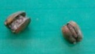

台湾の街中では、あちこちで檳榔（びんろう＝ピンラン）の実を売っている。売店は日本のタバコ屋さんのような感じ（写真を撮ってくるのを忘れた(>_<)）。檳榔は椰子（やし）の１種のような感じで、郊外へ行くと養殖林がたくさんある。
養殖林
檳榔の実は空豆くらいの大きさ。それを二つに割り、固形ソーダのようなものを挟んで売っている。

これを１箱に６個か７個づつ入れて、２，３百円で売っている。売り子は基本的に若い娘さん（中には昔の娘さんもいる...）。売り子が若い娘というのは もちろん客寄せのためだが、檳榔の実には興奮剤の作用もあるかららしい。じっさい箱にも半裸の女性が印刷してある。売り子の給料は歩合制らしいが、なかには一ト月で30万円（日本円）も稼ぐカリスマ店員もいるとか。
はじめて台湾へ行ったときから（25年くらい前）から檳榔ショップには気がついていた。というか 繁華街では100mおきにあるくらいなので、気がつかないわけがない。もちろん興味はあったが、味は少し苦辛いし習慣性がある（タバコみたいな感じ）と聞いた。そんなもん習慣になっても、日本ではどうしようもない(^-^；。そこで これまで買ったことはなかった。
なにより困るのは、噛んでいると果汁が唾液と反応して真っ赤になること。まるで歯茎から出血したみたいで、果汁を吐き出すと真っ赤な唾液が道路にベチャ....そんなわけで
これまで買ったことはなかったが、今回 同行してくれた知人（台湾人）から「おいしいから噛んでみろ」といって１箱 勧められた。
まぁ、話のタネだと思って噛んでみた。一粒 口に入れて噛み砕くと少し苦い汁が出てくる。そのまま５分ほど噛んでいると汁も出なくなったので、唾液どころか実ごと
道ばたにペッ（ちょうど日月譚の山の中だった....(^-^；）。さらに５分か10分くらい経つと、なんだか躰がほんわり熱くなってきた。なるほろ、これが興奮剤効果なのか。
習慣になるとまずいので実の写真だけ撮って残りは返却、記念に箱だけ持ち帰った。
|